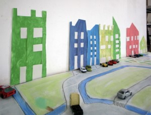

.
Hier haben wir Papier gewebt. Farbiges Papier als Haus und weisses für die Fenster.
Jetzt hat jeder sein eigenes Häuschen!

Das könnte dir auch gefallen

Aktivität
Stempeln
Schneide Formen aus Moosgummi, und klebe diese auf ein Stück Holz. Jetzt kannst Du Deine eigenen Formen stempeln.
Weiterlesen →
Aktivität
Avocado
Ein Avocadobaum zu pflanzen ist einfach aber eindrucksvoll wie ein gerader Stiel Richtung Himmel wächst... und dann kommen noch die Blätter dazu.
Weiterlesen →
Aktivität
Stadt
Auf Papier gemalt haben wir: Strassen, Parks, Parkplätze, Krankenhaus, Supermarkt, Schule und Fahrradwege... und alles das in unserem Wohnzimmer.
Weiterlesen →
Aktivität
Hase
Diese Hasen aus Filz halten die Eier warm. Für die ersten Näharbeiten einfach perfekt. VORLAGE PATRÓN TEMPLATE
Weiterlesen →
Aktivität
Farben
PÁTRON frauliebe TEMPLATE frauliebe Ein Kreis mit dem man die Farben lernt. Du brauchst Wäscheklammern und diese VORLAGE . Druck sie Dir aus und klebe sie…
Weiterlesen →
Aktivität
Schlange
Schlange Dank der Korken- Sammlung von Opa Jan, konnte Han nah ein neues Haustier basteln.
Weiterlesen →